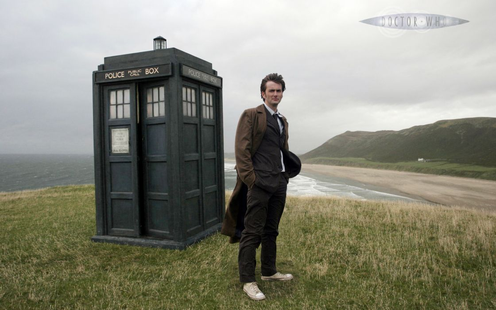
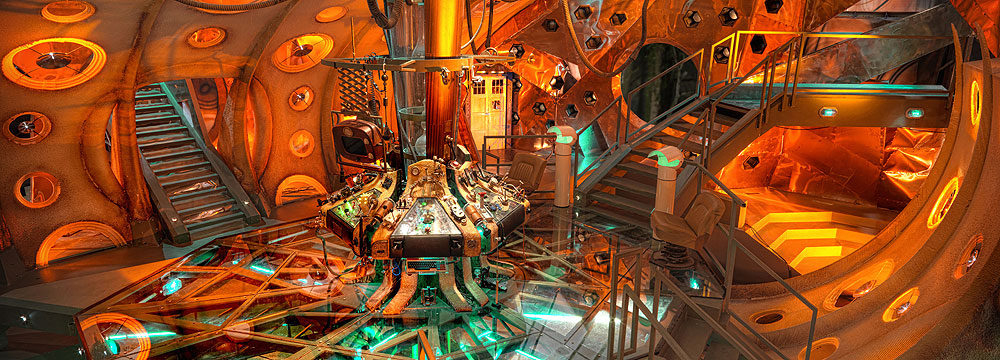

Doctor Who segue as aventuras de um renegado Senhor do Tempo do planeta Gallifrey que simplesmente atende pelo nome de "Doutor". Ele fugiu de seu planeta natal em uma TARDIS,tipo 40 - o que lhe permite viajar através do tempo e espaço. Devido a um mau funcionamento do "circuito camaleão" da TARDIS, que normalmente permite que a TARDIS possa assumir a aparência de objetos locais para disfarçar-se, a TARDIS do Doutor permanece fixa como uma cabine telefônica policial britânica
Abreviação para "Time and Relative Dimensions in Space" em português "Tempo e Dimensões Relativas no Espaço
Uma das principais características da TARDIS é que o interior existe em uma dimensão diferente da do exterior, fazendo com que seja "maior por dentro do que por fora" (bigger on the inside).
